文/Abby
從中原捷運站出發，雨便一路未停。濕滑的路面、高低起伏的階梯，讓每一步都得格外小心。這樣的天氣走讀，說不辛苦是假的，但大家仍撐著傘，一處處走過。有時候，正是這些帶著狼狽的時刻，反而讓一段旅程更令人難忘。
玉芳一路前後穿梭，專注地為大家捕捉每一個瞬間。那些沾著雨絲、帶著泥濘的畫面，後來成了這趟踏查最真實的記憶。每一次快門按下，都收藏著她在雨中默默記錄的用心與溫度。
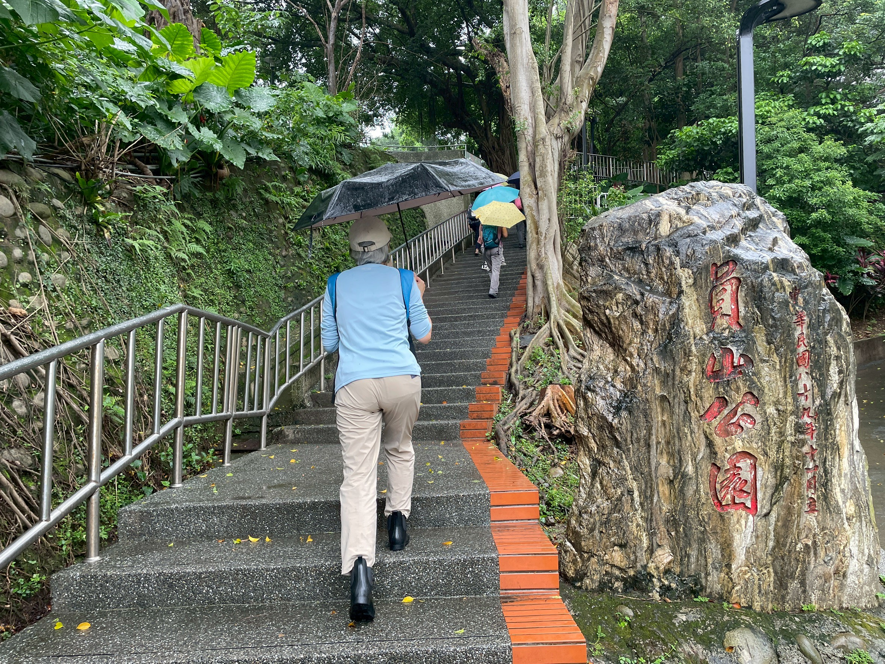
四十二級洗石子石階，在雨中泛著青灰色光澤，一路向上延伸。昭和十三年落成的海山神社，特意坐南朝北，俯瞰這片土地。出發前，我曾翻閱資料，試著在腦海裡重建它昔日的模樣——莊嚴的鳥居、筆直的參道、宏偉的拜殿。然而站在現場，那些建築早已消失於歲月之中，只留下基座與石階默默訴說往昔。當舊照片與眼前殘跡重疊的瞬間，心中不禁泛起淡淡的悵然。
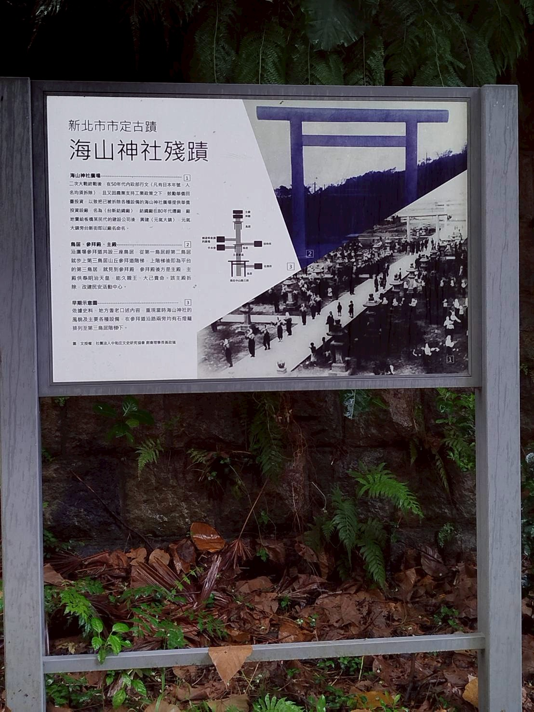
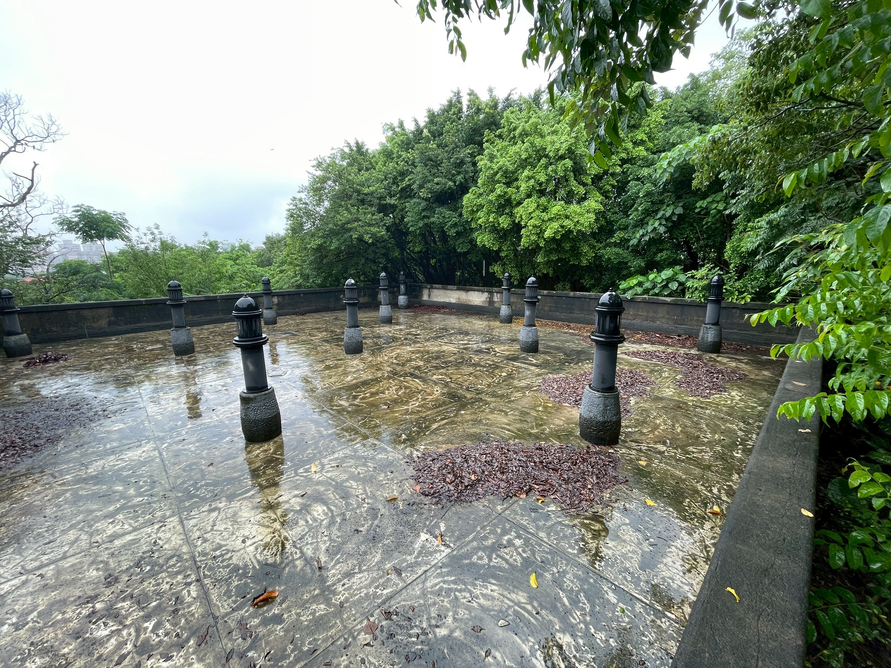
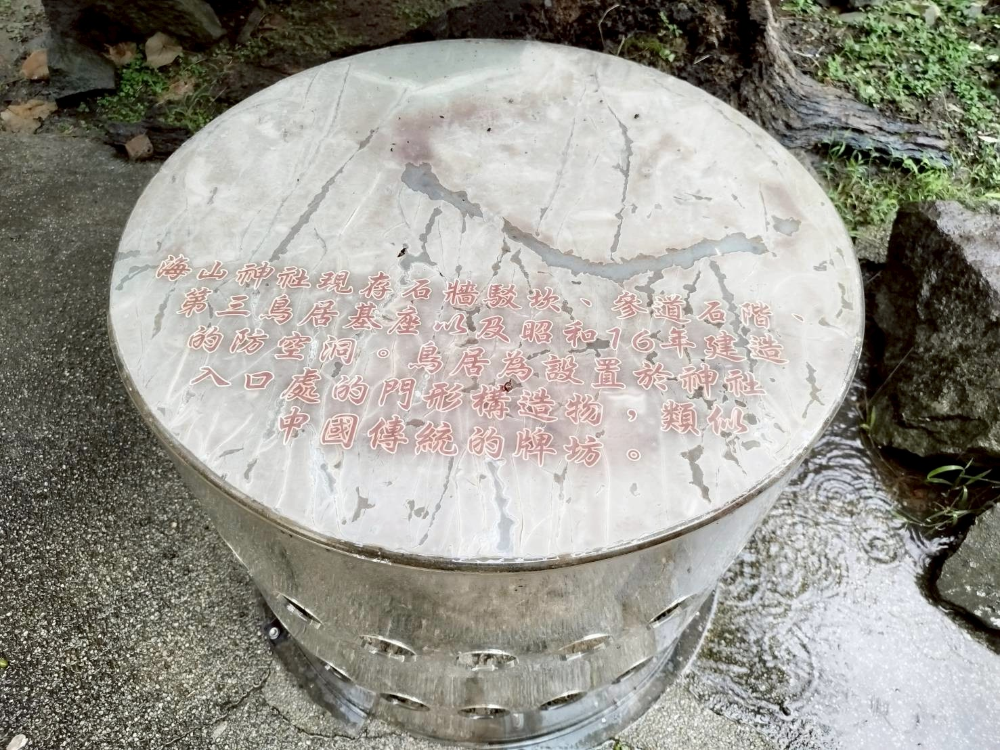
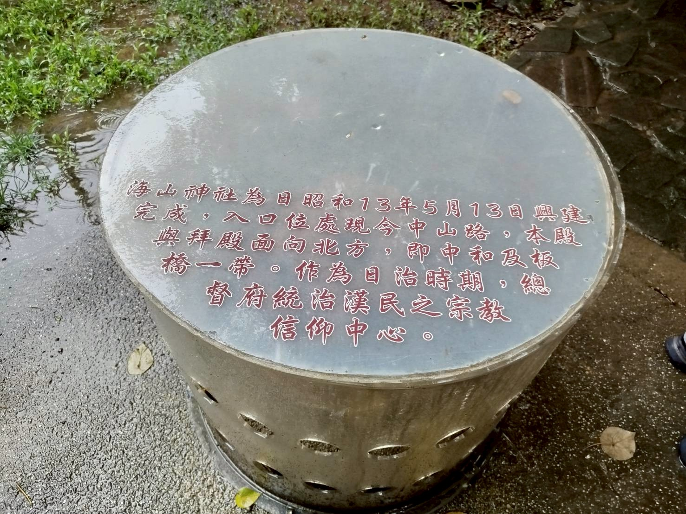
防空洞入口由一面頂部呈巨大弧形的斑駁水泥牆構成，隱身於蒼翠的蕨類與林木之間，散發著與世隔絕的神祕氣息。我與玉玲站在洞口，鏽蝕的鐵門與鐵絲網阻擋了前進的腳步。玉玲高舉相機，我則在一旁打燈，反覆嘗試，最終仍只留下模糊的影像。我們始終無法看清洞穴深處的模樣，只見幽暗的空間彷彿向前無限延伸。那看不見盡頭的幽深，反而留下更多想像，也彷彿收藏著許多戰時的記憶與故事。
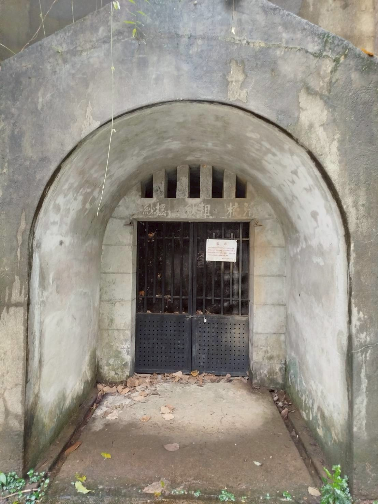
微雨輕落，我們在濕潤的綠意中駐足於「山本氏紀念碑」前。眾人撐著傘，穿梭於幾座古樸碑座之間，細細閱讀那段引水開渠、造福地方的歷史。
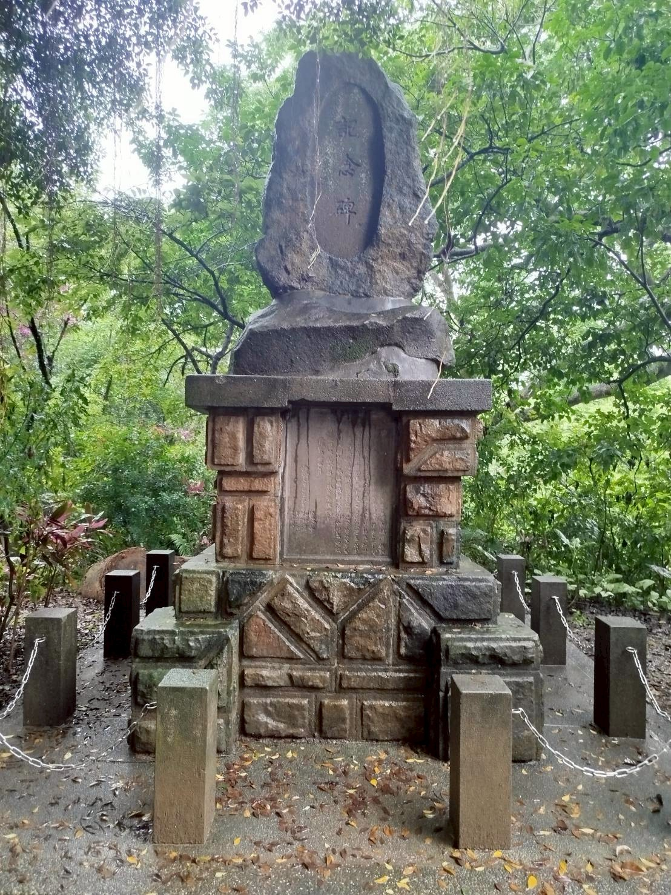
隨後來到大門深鎖的「中和瑞穗配水池」。雖然無法親身入內探訪，解說牌旁的一枚 QR Code，卻彷彿一把穿越時空的鑰匙，帶領我們一窺配水池內部的歷史景象。隨著畫面展開，斑駁的牆面與歷經風霜的結構逐一呈現。這座配水池沒有華麗的裝飾，卻真實保存了日治時期水利設施的營造風貌，使百年前的歷史再次鮮活地呈現。
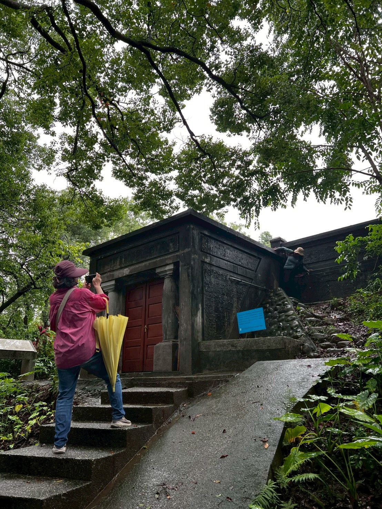
向來對文史並不熟悉的我，走完這段路後，卻在那些斷垣殘跡之間悄悄多了一些感受。說不上是頓悟，只是心裡某個角落，被填上了一份從前未曾有過的重量。
這次走訪最深的感動，其實不全然來自古蹟本身。老師在雨中專注的講解、同學們衣衫濕透卻仍熱烈討論的身影、淑敏在每段濕滑路途前輕聲提醒我小心的關懷，以及最佳綠葉的班長始終默默穿梭其間，細心照料老師與每一位同學——這些細微的人情溫度，比任何一塊石碑都更讓人動容。
衣服濕透了，腳步沉重了，但彼此照應的暖意，卻從未減少。
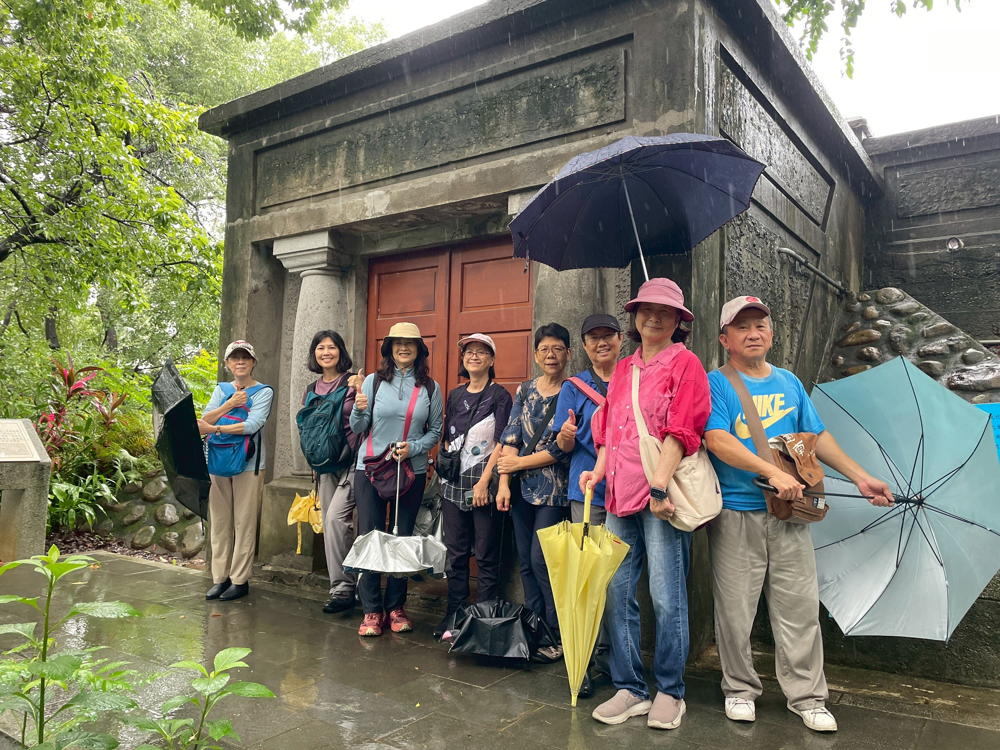
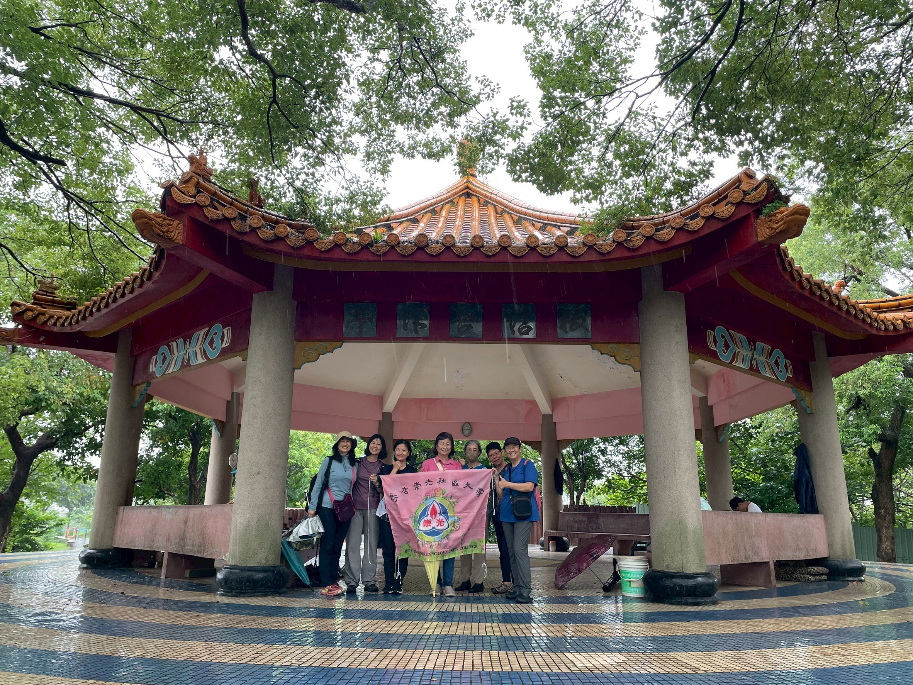
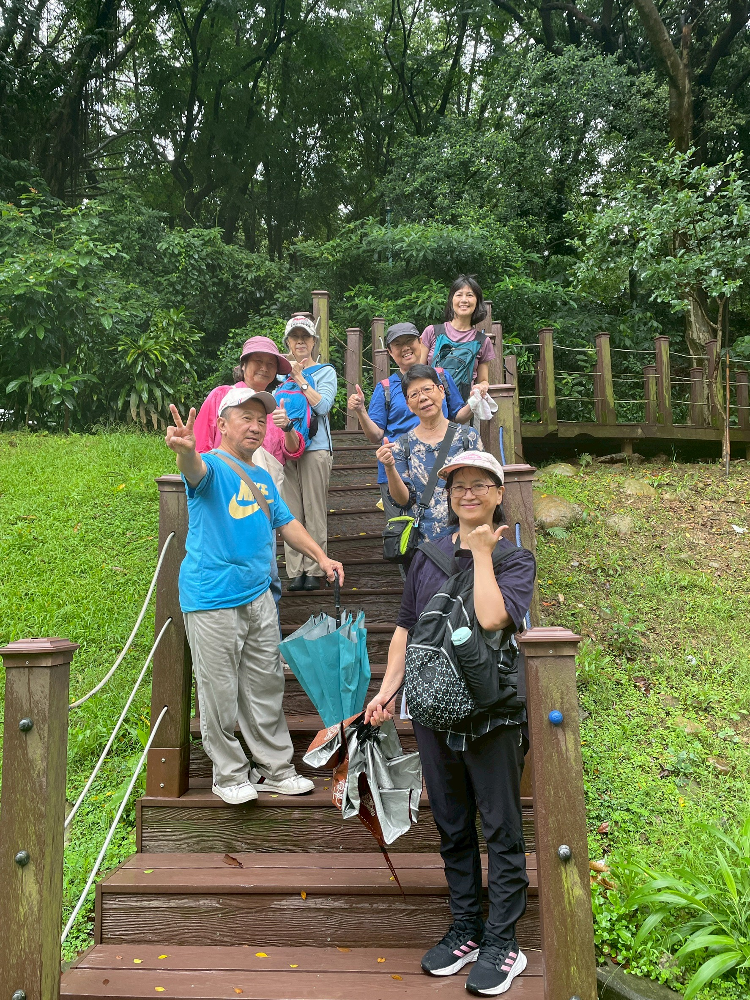
古蹟會留在原地，歷史會被歲月收藏；而那些一起走過風雨的人，才是最珍貴，也最難忘的風景。